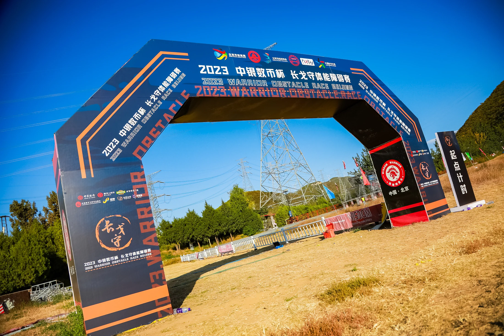
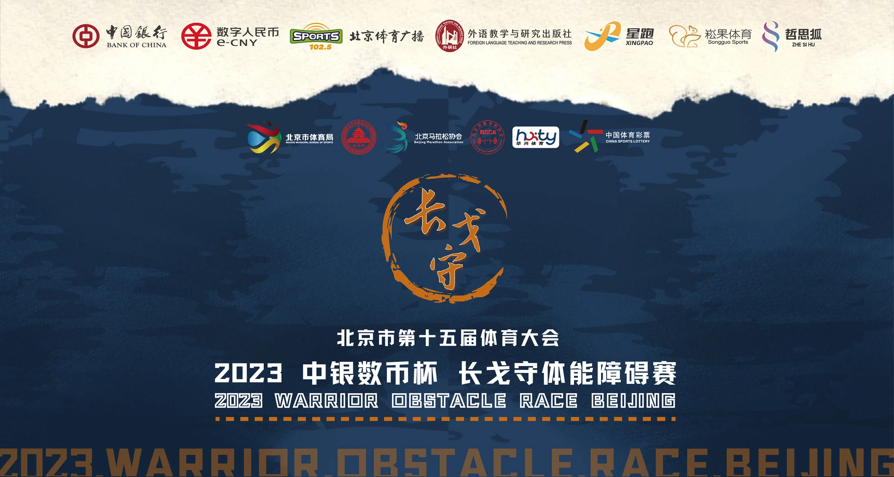
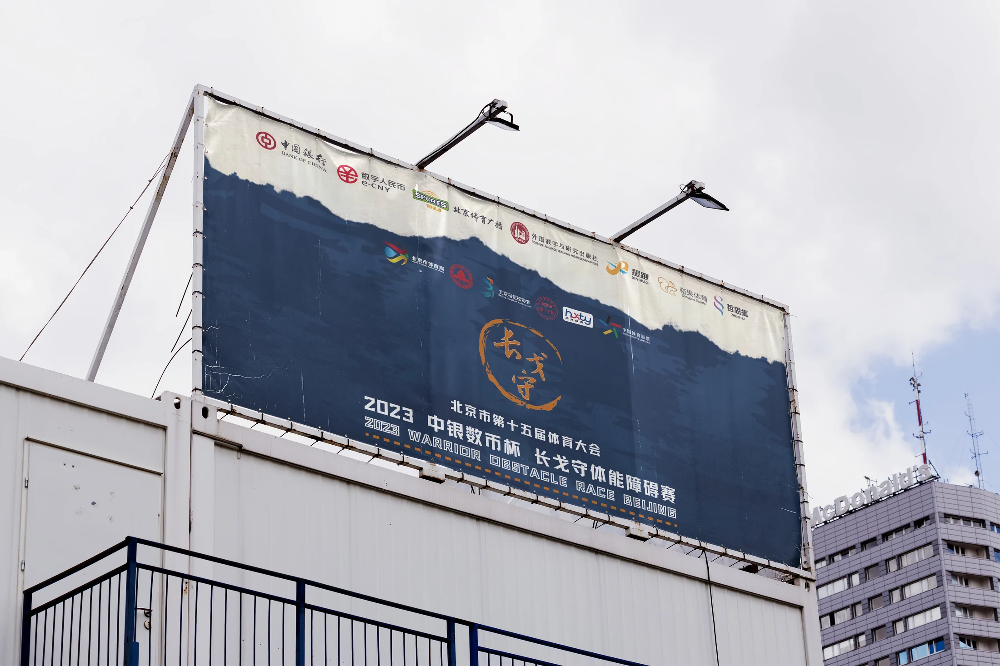
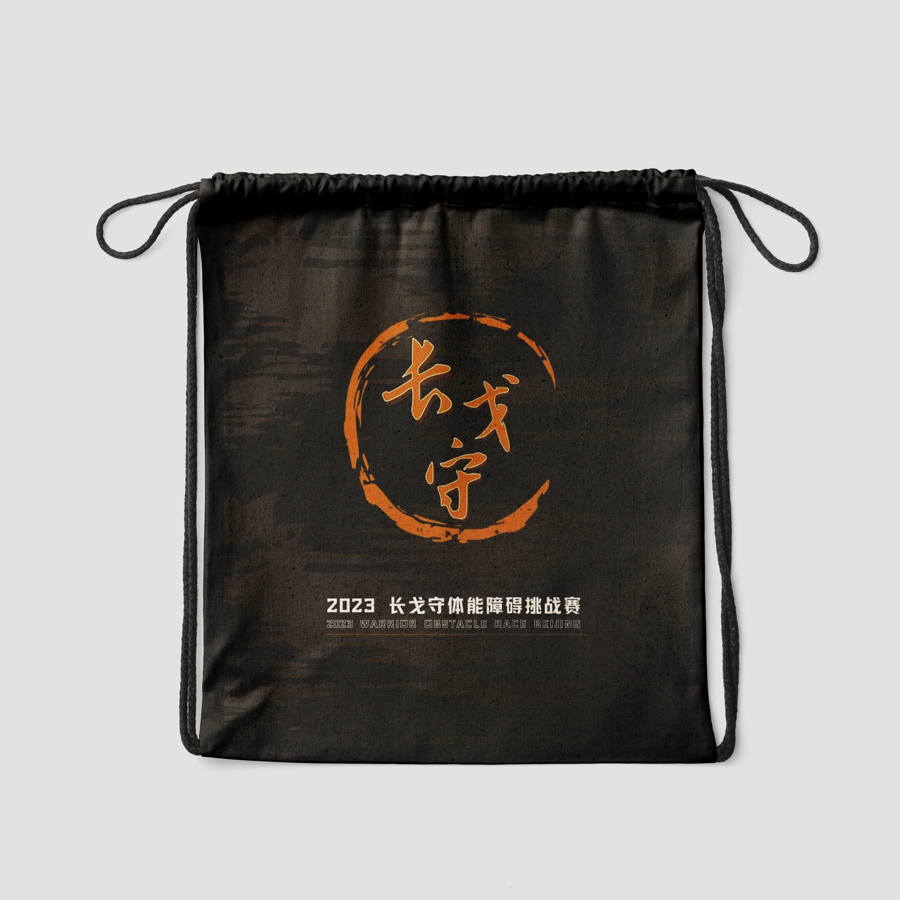
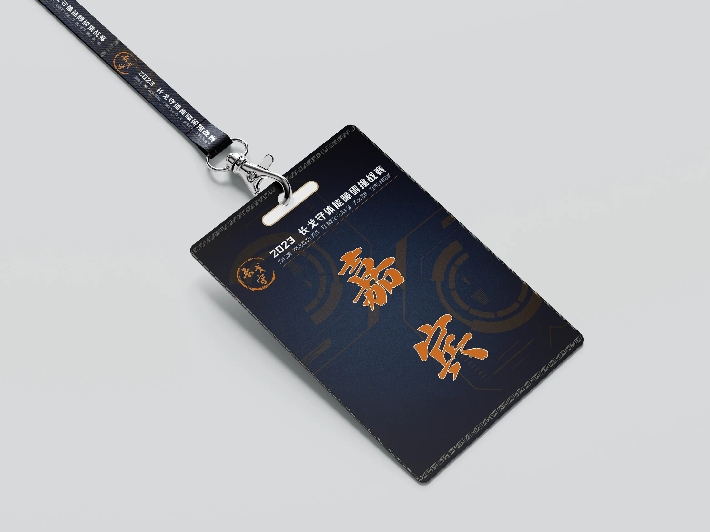
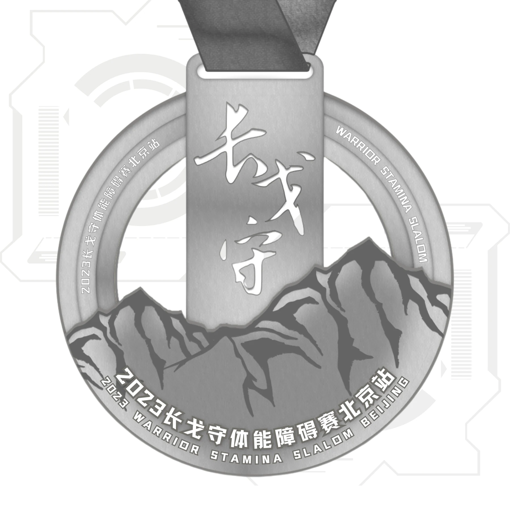
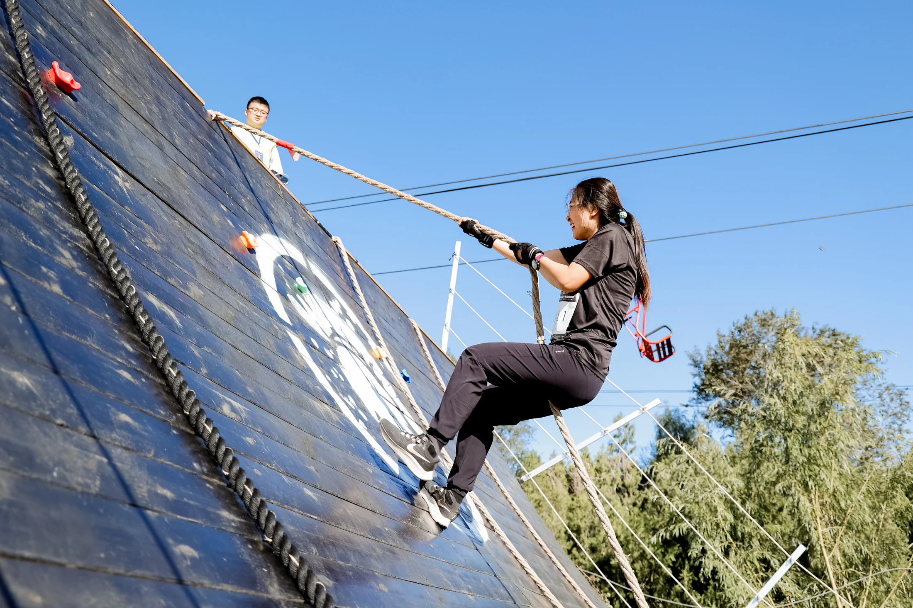
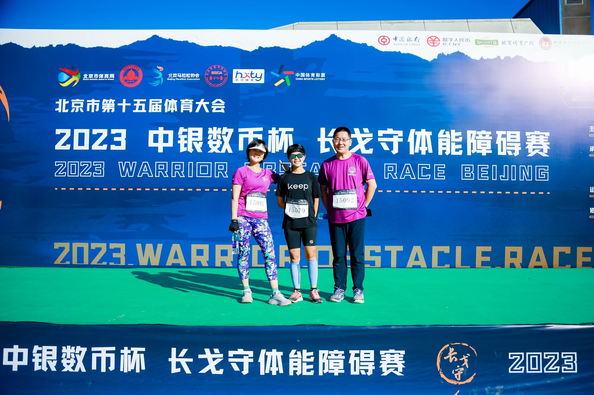
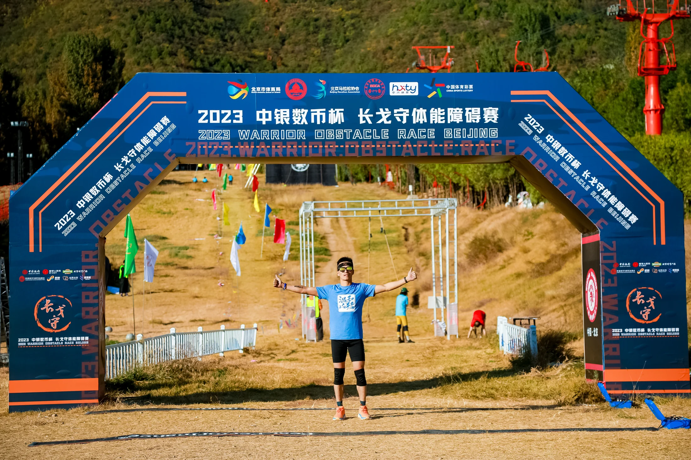

Changgeshou
A visual system for an obstacle-race event.
The identity extends from graphic communication to wayfinding, staff identification and physical objects.

02 / Graphic system
One identity across different scales.
The event artwork is carried from a large backdrop into outdoor communication. The application mockup tests how the graphic language reads at a distance.


03 / Physical applications
From information to objects.
Bags, staff identification and a medal study translate the graphic system into items handled and worn during the event. These are design applications and concept mockups, not all verified production outcomes.



04 / Event setting
Graphics encountered in use.
Event photographs place the visual identity in its physical context, from the race course to moments of recognition and celebration.


